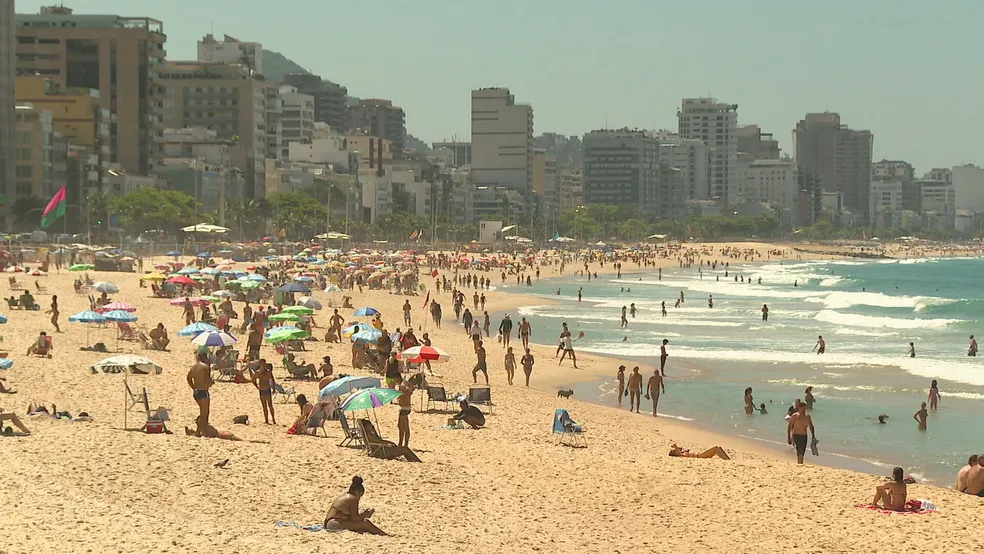

O forte calor que tem atingido o Rio de Janeiro está fazendo com que a praia fique lotada mesmo em dia de semana. Nesta quarta-feira (20), as areias estavam cheias de pessoas que aproveitavam o dia mesmo em pleno horário comercial.
E quem pensa que no mar só tem gente que não trabalha, está enganado. Muita gente passa por ele para dar um mergulho e ir, ou voltar, do trabalho.
A situação é até normal para os moradores do Rio. Mas os turistas, principalmente mineiros e paulistas, estranham a grande quantidade de pessoas.“Nesse horário a praia estar cheia é diferente”, diz a farmacêutica Thamires Castro. “Até de noite a praia cheia é bem diferente”.

O cardiologista Paulo Tinoco ensina como lidar com o calor e o sol forte. A dica é hidratação e proteção dos raios solares. “A ferramenta mais eficaz é o bloqueador solar. É bom sempre repor – eu diria que a cada 1 ou 2 horas seria interessante. Os horários que as pessoas devem frequentar: entre 8h e 10h e entre 15h e 17h para a incidência de sol. E a hidratação, beber bastante água, entre dois e três litros por dia em dias mais quentes, até um pouco mais”, recomenda